Systemy operacyjne · ochrona danych
Ochrona danych
w spoczynku
BitLocker vs. EFS
Michał Wójtowicz · 2026
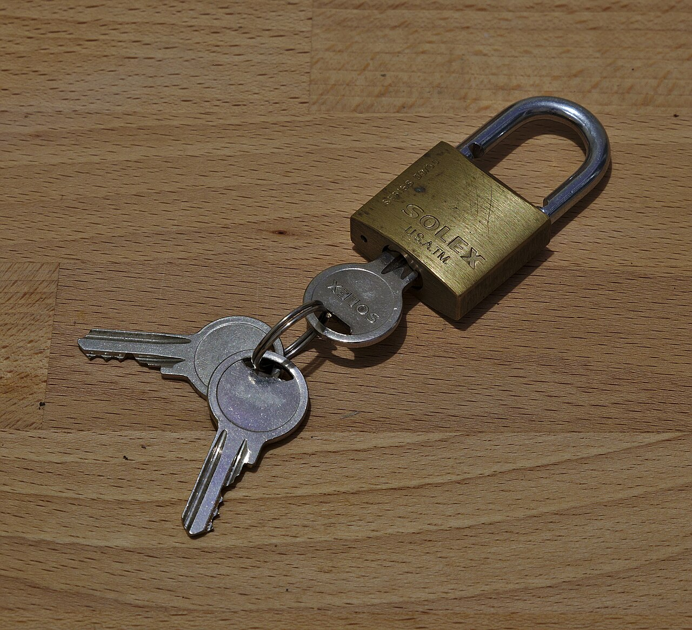
Plan na 30 minut
🧳
1. Problem
dane w spoczynku
💽
2. BitLocker
cały wolumin
🥶
3. Ataki
i jak się bronić
📄
4. EFS
pojedyncze pliki
🥊
5. Starcie
porównanie
✅
6. Wnioski
dobre praktyki
Trzy stany danych
W ruchu
TLS, VPN, SSH
W użyciu
RAM, CPU
W spoczynku
dysk, SSD, pendrive, backup
Scenariusz nr 1

Laptop służbowy
zostawiony w pociągu
zostawiony w pociągu
Dysk bez szyfrowania
mem „This is fine” (KC Green)
„Ale przecież mam hasło do Windowsa!”
Ja: ustawiam silne hasło do konta Windows
Złodziej: wyjmuje dysk i podłącza go do swojego komputera
Ja:
mem „Surprised Pikachu”
🔑 Hasło logowaniapilnuje drzwi do uruchomionego systemu
🐧 Live USB / drugi komputerczyta NTFS bez pytania o hasło
🔒 Szyfrowaniebez klucza – tylko szum
Dwa podejścia
Cały wolumin
Full Volume Encryption → BitLocker
Wybrane pliki
File-Level Encryption → EFS
Część 2
BitLocker
Drive Encryption
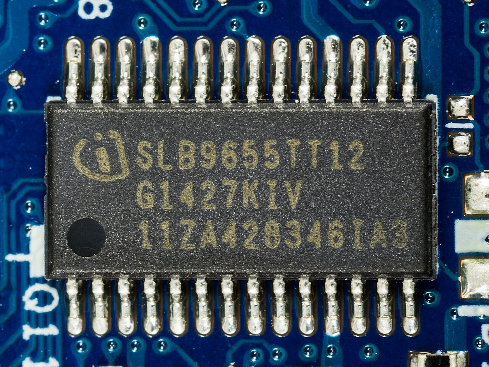
BitLocker w pigułce
📅 od Windows Vista (2007)
🔐 AES-XTS 128 / 256 bit
💽 cały wolumin, przezroczyście
🪟 Pro · Enterprise · Education
🏠 Home: „Szyfrowanie urządzenia”
🔌 BitLocker To Go – pendrive'y
Szyfrowanie dysków funkcją BitLocker–▢✕
Dysk systemu operacyjnego
💽
C: Funkcja BitLocker włączona
XTS-AES 128 · Ochrona: TPM
🛡 Wstrzymaj ochronę
🔑 Utwórz kopię zapasową klucza odzyskiwania
🔓 Wyłącz funkcję BitLocker
🔑 Utwórz kopię zapasową klucza odzyskiwania
🔓 Wyłącz funkcję BitLocker
Stałe dyski danych · Dyski wymienne
Hierarchia kluczydlaczego zmiana PIN-u nie wymaga ponownego szyfrowania 1 TB
💽 Danesektory woluminu
⟵
FVEKFull Volume
Encryption Key
Encryption Key
⟵
VMKVolume
Master Key
Master Key
⟵
🧩 TPM
🧩 TPM + PIN
🔌 Klucz startowy USB
🔢 Hasło odzyskiwania (48 cyfr)
🔤 Hasło (dyski danych)
„A ⟵ B” = A jest zaszyfrowane kluczem B · protektory po prawej
TPM – sejf na płycie głównej
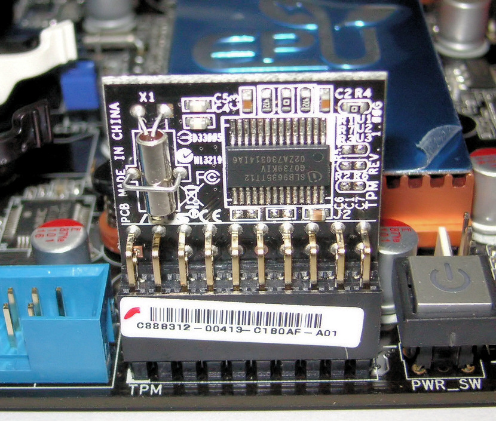
Moduł TPM (Wikimedia Commons)
UEFI
→
Secure Boot
→
Boot Manager
↓ pomiary (skróty) trafiają do rejestrów PCR
TPM: czy PCR = stan „zaufany”?
✅ takodpieczętuje VMK → Windows startuje
❌ nieekran odzyskiwania BitLocker
Klucz odzyskiwania
Odzyskiwanie funkcji BitLocker
Wprowadź klucz odzyskiwania dla tego dysku
______-______-______-______-
______-______-______-______
______-______-______-______
Identyfikator klucza: 7A3F2C1D
Więcej informacji: aka.ms/recoverykeyfaq
Naciśnij Enter, aby kontynuować · Esc, aby uzyskać więcej opcji
Aktualizacja BIOS-u
w piątek o 16:00
w piątek o 16:00
Gdzie jest klucz
odzyskiwania?
odzyskiwania?
mem „Hide the Pain Harold”
☁️ konto Microsoft🏢 AD / Entra ID🖨 wydruk📄 plik
BitLocker w praktyce
# stan szyfrowania manage-bde -status # włącz na C: z hasłem odzyskiwania manage-bde -on C: -RecoveryPassword # dodaj protektor TPM + PIN manage-bde -protectors -add C: -TPMAndPIN # wstrzymaj na 1 restart (np. aktualizacja BIOS) Suspend-BitLocker -MountPoint C: -RebootCount 1
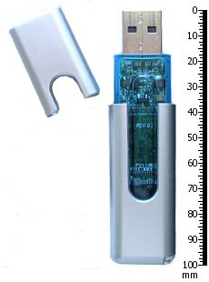
BitLocker To Go – szyfrowany pendrive (FAT32/exFAT)
Część 3
Ataki
czyli: „nic nie jest niezniszczalne”
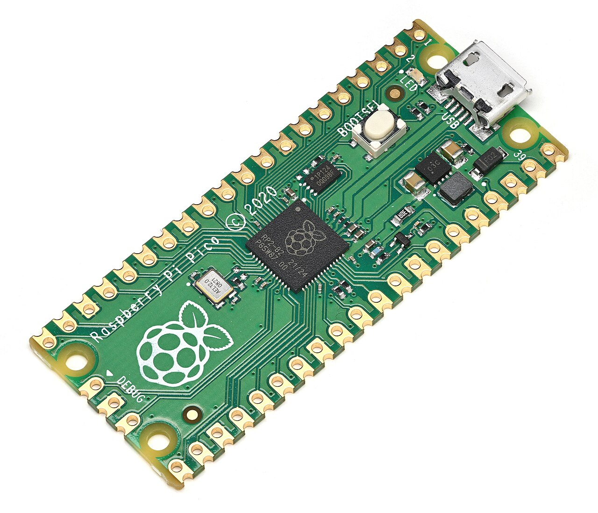
Nie łamiemy AES-a. Kradniemy klucz.
Cold boot
zamrożony RAM zachowuje klucze od kilku sekund do minut
Princeton, 2008
Princeton, 2008
TPM sniffing
podsłuch VMK na magistrali LPC/SPI
Pico za ~10 $, 2024
Pico za ~10 $, 2024
DMA
Thunderbolt / PCIe czyta pamięć z pominięciem CPU
bitpixie
rozruch sieciowy starego bootloadera (CVE-2023-21563)
38C3, 2024
38C3, 2024
Wspólny mianownik: tryb „tylko TPM” – klucz wydawany bez udziału człowieka
TPM sniffing w jednym obrazku

Czekaj, klucz VMK leci do CPU
otwartym tekstem po magistrali?
otwartym tekstem po magistrali?
Zawsze leciał
mem „Always has been” · dotyczy dyskretnych układów TPM; fTPM w CPU jest odporny na podsłuch magistrali
Obrona
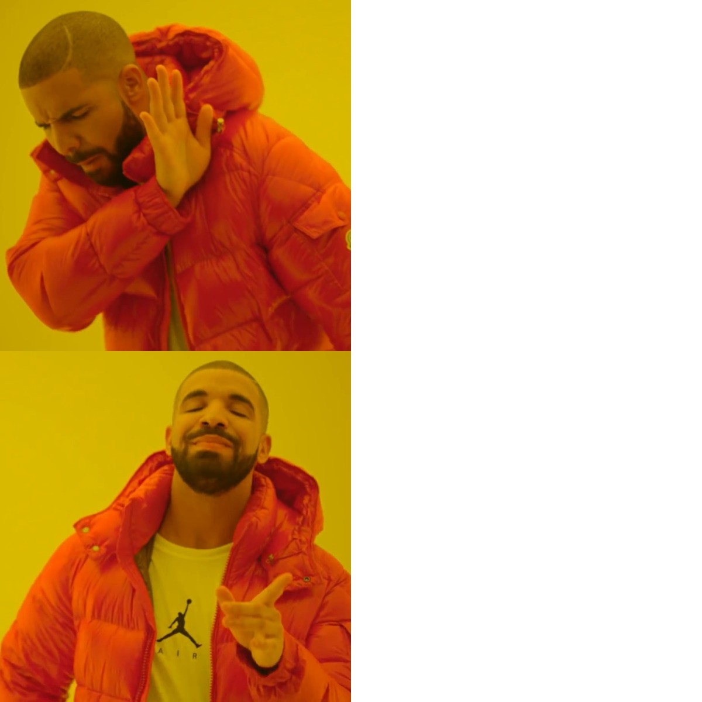
Tylko TPM
(start bez pytania)
(start bez pytania)
TPM + PIN
przed startem
przed startem
mem „Drake Hotline Bling”
🔢 PIN przed rozruchemTPM nic nie wyda bez człowieka
🛡 Kernel DMA ProtectionIOMMU blokuje Thunderbolt
🔄 aktualizacje + nowe certyfikaty Secure Bootna bitpixie
💤 hibernacja zamiast uśpieniaklucz znika z RAM
Pułapka: „Wstrzymaj ochronę”
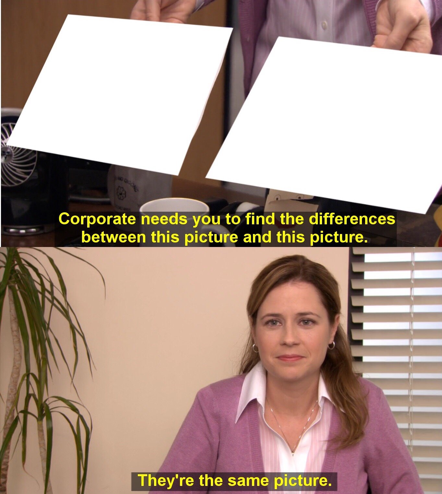
BitLocker
wstrzymany
wstrzymany
Dysk bez
szyfrowania
szyfrowania
mem „They're the same picture” (The Office)
🔓 „clear key”VMK zapisany na dysku jawnie
Dane nadal zaszyfrowane…
ale klucz leży obok.
➡ Wstrzymanie tylko na czas restartu.
ale klucz leży obok.
➡ Wstrzymanie tylko na czas restartu.
Część 4
EFS
Encrypting File System
EFS w pigułce
📅 od Windows 2000
🗂 tylko NTFS
📄 pliki i foldery
👤 klucz per użytkownik
🪟 Pro · Enterprise · Education
🟩 zielone nazwy w Eksploratorze
📁 C:\Users\student\Dokumenty–▢✕
| Nazwa | Data modyfikacji | Typ |
|---|---|---|
| 🔒 umowa_poufna.docx | 14.10.2026 | Dokument Word |
| 🔒 wyniki_badan.xlsx | 12.10.2026 | Arkusz Excel |
| 🔒 klucze_api.txt | 09.10.2026 | Dokument tekstowy |
| 📄 notatki_SO.txt | 02.10.2026 | Dokument tekstowy |
| 🖼 mem_bitlocker.png | 01.10.2026 | Obraz PNG |
Właściwości → Zaawansowane → ☑ Szyfruj zawartość, aby zabezpieczyć dane
Jak działa EFSszyfrowanie hybrydowe: symetryczne + asymetryczne
📄 Plik jawny
→
🔑 FEKFile Encryption Key
losowy, AES-256
losowy, AES-256
→
🔒 Zaszyfrowana treść
↓ FEK szyfrowany RSA
👤 klucz publiczny
użytkownikacertyfikat EFS
użytkownikacertyfikat EFS
atrybut
DRF: FEK dla agenta odzyskiwania
$EFSDDF: FEK dla użytkownikaDRF: FEK dla agenta odzyskiwania
←
🛟 klucz publiczny DRAData Recovery Agent
🔐 klucz prywatny użytkownika
⟵
DPAPI
⟵
🔤 hasło logowania
Reset hasła a EFS
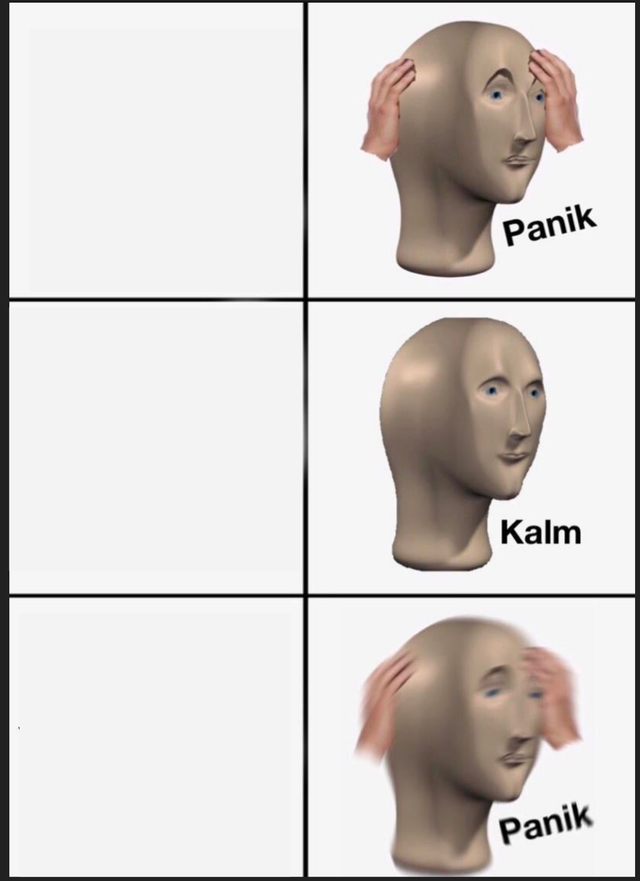
Zapomniałem hasła do Windowsa
Admin mi je zresetuje
Klucz EFS był chroniony starym hasłem
mem „Panik Kalm Panik”
✅ zmiana hasła (znam stare)DPAPI przeszyfrowuje klucze
❌ reset hasła przez adminadostęp do plików EFS utracony
🛟 ratunek: kopia .pfx albo DRA
Gdzie EFS przestaje chronić
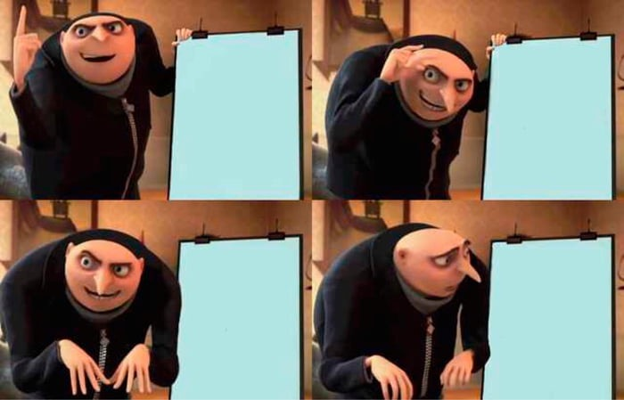
Szyfruję plik przez EFS
Kopiuję go na pendrive z FAT32
Plik zapisuje się odszyfrowany
Plik zapisuje się odszyfrowany
mem „Gru's Plan”
💾 kopia poza NTFSFAT32, exFAT
📧 e-mail, chmurawysyłany jest plik jawny
🏷 nazwy i rozmiary plikównie są szyfrowane
🗑 tymczasowe kopie, pagefilemogą zawierać jawne fragmenty
EFS w praktyce: cipher
# zaszyfruj folder (z podfolderami) cipher /e /s:C:\Poufne # kto może odszyfrować plik? cipher /c C:\Poufne\umowa.docx # kopia certyfikatu + klucza prywatnego (.pfx) cipher /x C:\Backup\efs-klucz # utwórz certyfikat agenta odzyskiwania (DRA) cipher /r:C:\Backup\dra # wyczyść „wolne” miejsce po skasowanych plikach cipher /w:C:\
Część 5
Starcie
co wybrać?

BitLocker
EFS
Admin
mem „Two Buttons”
BitLocker vs. EFS
| BitLocker | EFS | |
|---|---|---|
| Co szyfruje | cały wolumin | wybrane pliki/foldery |
| Chroni przed | kradzieżą sprzętu 🧳 | innymi użytkownikami 👥 |
| Po zalogowaniu | dane jawne dla wszystkich kont | tylko właściciel (+ DRA) |
| Klucz z | TPM / PIN / hasło | certyfikat + hasło logowania |
| pagefile, temp, nazwy plików | ✅ zaszyfrowane | ❌ jawne |
| Systemy plików | NTFS, ReFS, FAT32, exFAT | tylko NTFS |
| Największe ryzyko | zgubiony klucz odzyskiwania | reset hasła, brak kopii .pfx |
Nie „albo”, tylko „i”
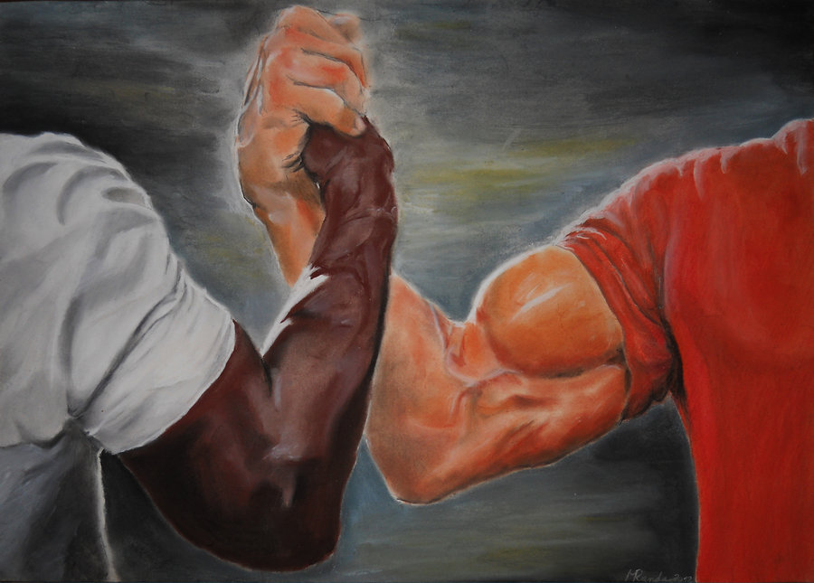
BitLocker
EFS
Defense in depth
mem „Epic Handshake”
💻 LaptopBitLocker TPM + PIN
🔌 PendriveBitLocker To Go
👥 Komputer współdzielonyBitLocker + EFS na poufne foldery
🗄 SerwerBitLocker (+ Network Unlock) · uprawnienia NTFS
Dobre praktyki
☑ Klucze odzyskiwania w AD / Entra ID
☑ TPM + PIN na laptopach
☑ XTS-AES 256 przez GPO / Intune
☑ EFS: DRA + kopia .pfx poza komputerem
☑ Szyfruj, zanim trafią tam dane
☑ Test odzyskiwania – zanim będzie potrzebny
Klucz odzyskiwania na karteczce przyklejonej do laptopa to nie backup
mem „Change My Mind”
Co dalej?
🏠
Windows 11 24H2
szyfrowanie urządzenia włączane automatycznie – także w Home
🧬
Personal Data Encryption
„nowy EFS”: klucze powiązane z Windows Hello for Business
⚠️
Sprzętowe SED
po badaniach z 2018 r. BitLocker domyślnie nie ufa szyfrowaniu w SSD
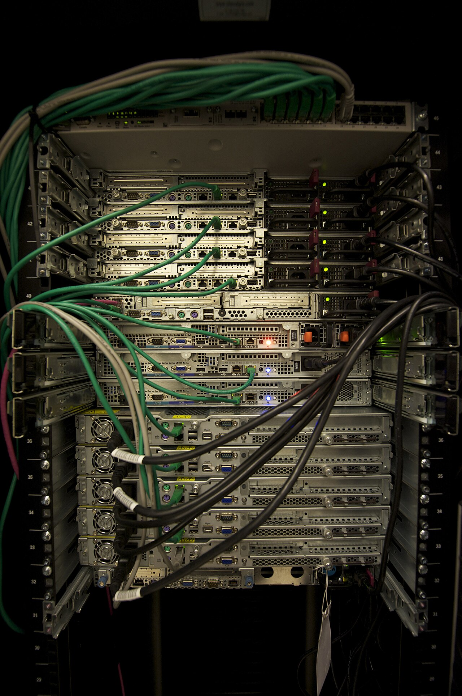
Inne systemy: LUKS / dm-crypt (Linux) · FileVault (macOS) · VeraCrypt (wieloplatformowy)
Podsumowanie
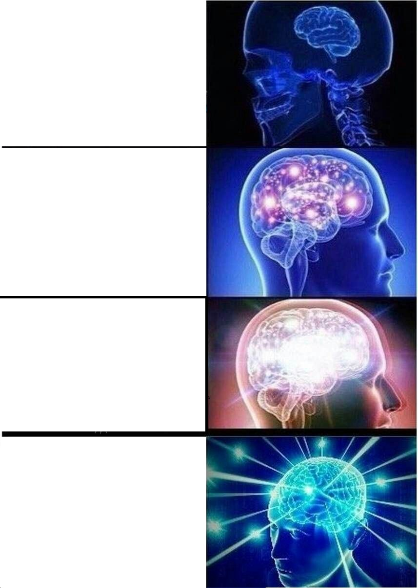
Bez szyfrowania
„Mam hasło do Windowsa”
BitLocker z TPM
BitLocker TPM+PIN + EFS + klucze w Entra ID
mem „Expanding Brain”
💽 BitLocker = skradziony sprzęt
📄 EFS = inni użytkownicy
🔑 Szyfrowanie = zarządzanie kluczami
Prowadzący: „Są jakieś pytania?”
Sala:
Sala:
Dziękuję! Pytania?
Źródła
• Microsoft Learn – BitLocker overview, BitLocker countermeasures, BitLocker recovery overview
• Microsoft Learn – Encrypting File System, dokumentacja polecenia
cipher, Personal Data Encryption• J. A. Halderman i in., Lest We Remember: Cold Boot Attacks on Encryption Keys, USENIX Security 2008
• stacksmashing, Breaking BitLocker – Bypassing the Windows Disk Encryption, 2024
• T. Lambertz, Windows BitLocker: Screwed without a Screwdriver (bitpixie, CVE-2023-21563), 38C3, 2024
• C. Meijer, B. van Gastel, Self-encrypting deception: weaknesses in the encryption of SSDs, IEEE S&P 2019
• Zdjęcia: Wikimedia Commons – TPM Asus.jpg, Lenovo N20 … Infineon SLB9655TT12, Seagate ST33232A hard disk inner view, Solex 99 30 padlock, Raspberry Pi Pico oblique, USB flash drive, Servers in a Rack, Love padlocks … Ljubljana
• Szablony memów: imgflip.com